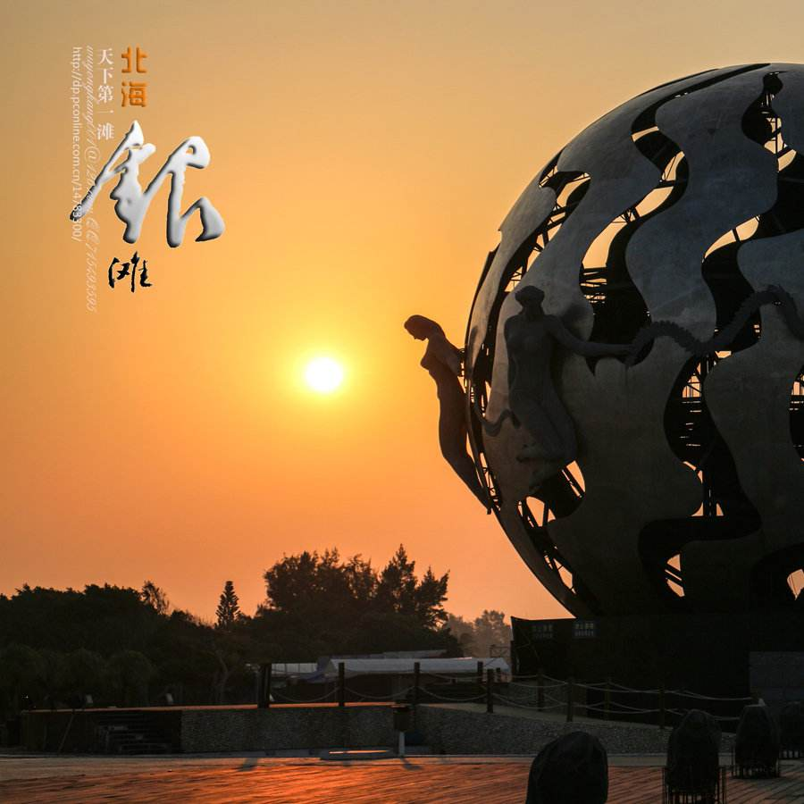
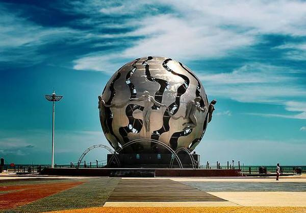
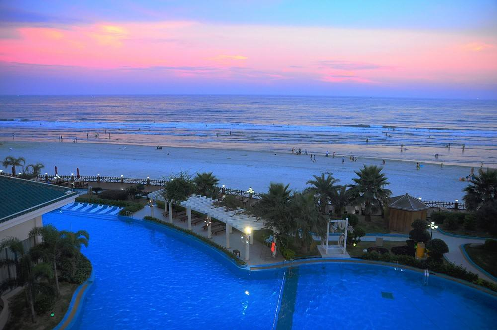

舒
适
祥
和
优
美
北海市位于广西最南端，地处低纬度，濒临：北部湾。北海市的气候属海洋性季风气候，具有典型的亚热带特色。
- 
- 
冬半年（10月至次年3月）主要受偏北季风控制，夏半年（4—9月）主要受热带高压、强风和偏南风影响。秋春相连，长夏无冬，夏无酷暑，气候宜人。北海的风向分布具有典型的季风特征。夏半年盛行偏南风，冬半年多吹偏北风。4月和9月为冬夏季风交替期。4月份由冬季风转为夏季风，最多风向由偏北向偏南过渡；9月份由夏季风转为冬季风，最多风向由偏南逐渐转为偏北。正常年份，10月份至次年3月份以偏北风居多，4月至9月以偏南风为主。
- 
2019年8月28日，北海入选第四批中央财政支持开展居家和社区养老服务改革试点地区。
2019年11月3日，“中国城市绿色竞争力排名TOP100”发布，北海排名第44
2019年11月21日，北海入选“2019中国地级市全面小康指数前100名”。